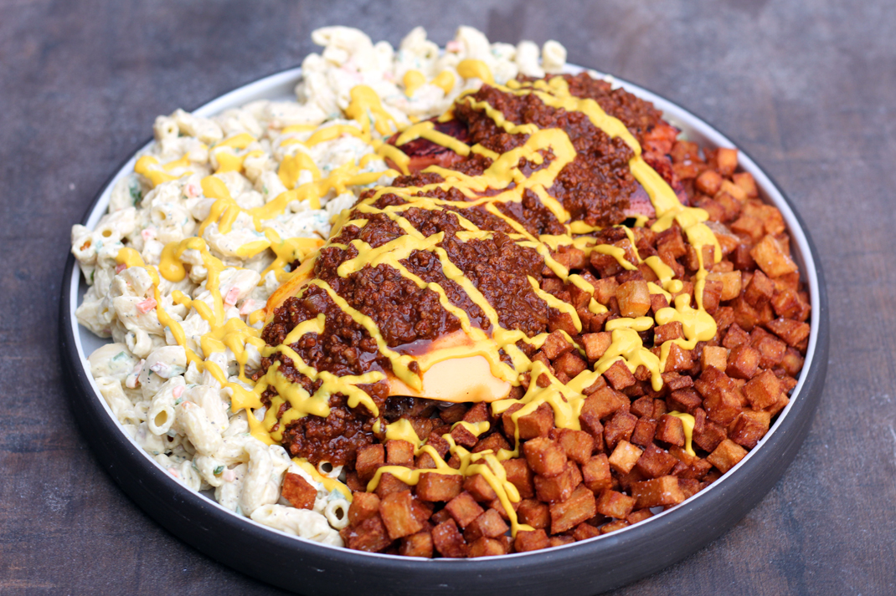
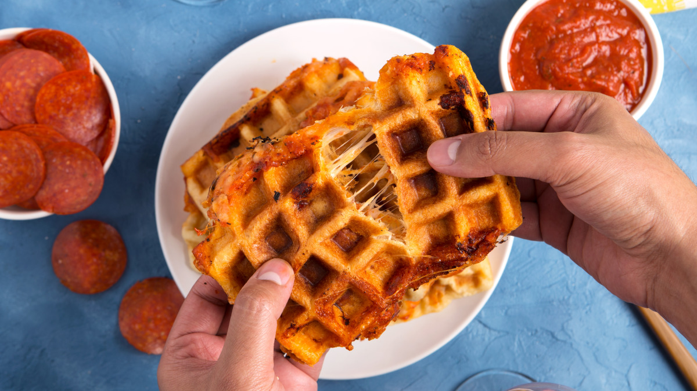
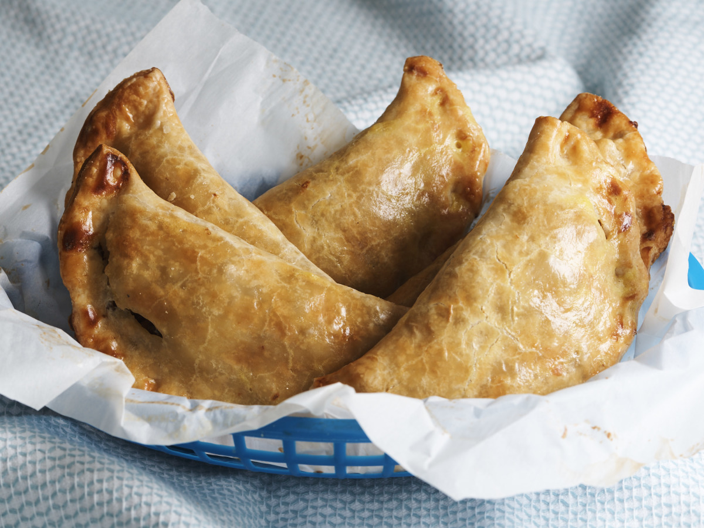

The Kooky Entrees!
THE GARBAGE PLATE (BURGER VERSION)

Ingredients
- 3/2 cups of cooked maccaroni
- 1/4 cup of mayonnaise
- 2 tablespoons of diced celery
- 1 tablespoon of chopped carrot
- 1/4 teaspoon of salt
- 1/4 teaspoon of pepper
- 1 large potato, baked and cubed
- 1 tablespoon of butter
- 2 Hamburger patties
- 2 slices of American Cheese
- 2 Mustard
- 2 Horseradish
- 2 Ketchup (or SPECIAL SAUCE)
- 3 Slices of Italian bread
- 2 Chopped onion
- 2 Refried beans
Special Sauce
- 1 medium onion, chopped
- 1 garlic clove, minced
- 1 tablespoons of olive oil
- 1 pound of ground beef
- 1 cup of water
- 12 ounces of tomato paste
- 1/2 tablespoon of brown sugar
- 1 teaspoon of black pepper
- 3/4 teaspoon of cayanne pepper
- 1 teaspoon of chili poweder
- 3/2 teaspoons of paprika
- 1/2 teaspoon of cumin
- 1/2 teaspoon of allspice
- 1/4 teaspoon of cinnamon
- 1/2 teaspoon of powdered clove
Directions
To Make the Special Sauce:
- In large skillet fry chopped onion and garlic in oil until soft. Add meat, stirring constantly with fork to keep its texture fine.
- Once meat is cooked add water and tomato paste, cook for 10 minutes.
- Then add sugar and spices. Cook 30 minutes, adding water if needed.
Assembly:
- Mix together the noodles, mayo, celery, seasoning, and carrots and place into a large square foam container (or plate, but not as authentic).
- Fry potatoes in butter until very crispy then put next to mac salad on plate.
- Place OPTIONAL beans of plate if needed.
- Cook hamburger until well done and top with sliced cheese.
- Then place burgers ON TOP of the mac salad and home fries.
- Mix together about equal parts mustard and horseradish and pour on top of burgers and top with optional onions.
- Pour hot sauce or VERY LARGE spoonfuls of special sauce and a HUGE glob of ketchup over burgers (some like to stir everything together so its one huge mess).
- Eat with plastic fork, or just use the bread as a spoon and try not to pass out. This should take about an hour to finish.
- YUM, every drunk college kids dream food.
WAFFLED PIZZA DIPPERS

Ingredients
- 1 3/4 cups of shredded mozzarella cheese
- 1/4 cups of shredded parmesan cheese
- 1/2 teaspoon of dried basil leaves
- 1/2 teaspoon of dried oregano leaves
- 2 (8 ounce) cans of crescent dinner rolls
- 14 ounce pizza sauce
- 32 pepperoni slices
Directions
- Heat waffle maker with 8-inch-square cooking surface on Medium-High heat setting.
- In medium bowl, mix both cheeses, basil and oregano; set aside.
- In 1 1/2-quart saucepan, heat pizza sauce over low heat, stirring occasionally, until hot. Place in small serving bowl.
- Unroll both cans of dough onto work surface. Separate each crosswise, making four (7-by-6-inch) rectangles; firmly press perforations to seal.
- Place 1 dough rectangle on bottom surface of heated waffle maker, being careful not to open up perforations. Quickly sprinkle 1 cup cheese mixture evenly on top of dough. Place half the slices of pepperoni evenly over cheese mixture. Top with another dough rectangle; close waffle maker. Bake 2 to 3 minutes or until sandwich is golden brown.
- With pancake turner, remove from waffle maker; place on cutting board. Cool 30 seconds before cutting.
- Cut into square sandwiches or triangular snacks.
- Repeat with remaining dough, cheese mixture and pepperoni.
- Serve warm with pizza sauce for dipping.
UPPER MICHIGAN PASTIES

Ingredients
Crust:
- 1/2 pound of lard
- 1 cup of boiling water
- 4 cups of all-purpose flour
- 1 tablespoon of salt
Filling:
- 8 potatoes, peeled and cubed
- 1 large rutabaga, peeled and cubed
- 1 pound of ground sirloin
- 3 sweet onions, peeled and chopped
- 2 tablespoons of salt
- 1 tabblespoon of black pepper
Directions
Crust:
- Pour the boiling water over the lard until the lard is dissolved.
- Add salt to flour and add this to the waterand lard.
- Mix this together until it forms a ball.
- Wrap in Saran Wrap and refrigerate overnite.
Filling:
- Combine the filling ingredients in a large bowl. Let sit and meld together, while rolling out the crust. This chilled dough will make 8 pasties.
- Take one of the dough balls and roll out on a floured surface, roll into a circle about.
- 1/8 inch thick. Do the same with all the dough.
- Put large cupful of filling on the crust; dab ice water around the edge of the crust to seal.
- Add a teaspoon of butter on top of the filling before sealing.
- Fold crust over top of filling like a turnover, and seal edges well.
- Place pasties on baking sheets and bake at 425°F for 15 minutes; then turn oven down to 350°F for 60 mimutes, or until nicely browned.
- When done! Brush the top with butter.